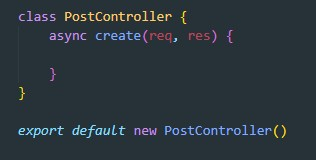
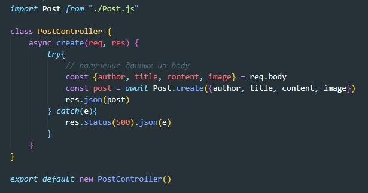
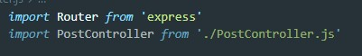
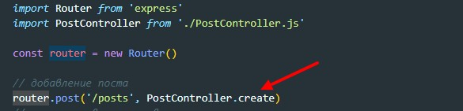

Хранить логику в маршрутах - это плохая практика, поэтому всю логику выносим в контроллер. Создадим файл PostController.js
Внутри этого файла создаем класс с методом create
Здесь обращаем внимание что вы экспортируем не класс а объект
Далее переносим логику добавления поста внутрь контроллера/ Не забываем импортировать схему Post (расширение JS обязательно)
Теперь возвращаемся в маршрутизацию и импортируем контроллер
После чего у маршрута добавляем вторым аргументом метод объекта контроллера
Create, read, update, delete